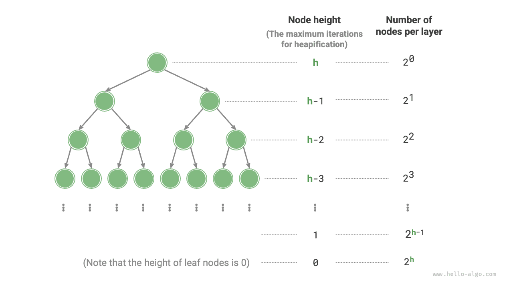

الأكوام (Heaps)
عملية بناء الكومة
في بعض الحالات، نريد بناء كومة باستخدام جميع عناصر قائمة، وتُسمّى هذه العملية «عملية بناء الكومة».
التنفيذ بإدراج العناصر
ننشئ أولاً كومة فارغة، ثم نجتاز القائمة، منفّذين «عملية إدراج العنصر» على كل عنصر بالترتيب. ويعني ذلك إلحاق العنصر بنهاية الكومة ثم إجراء تعديل الكومة (heapify) «من الأسفل إلى الأعلى» على ذلك العنصر.
في كل مرة يُدرَج عنصر في الكومة، يزداد طول الكومة بمقدار واحد. وبما أن العقد تُضاف إلى الشجرة الثنائية بالتتابع من الأعلى إلى الأسفل، فإن الكومة تُبنى «من الأعلى إلى الأسفل».
بمعطى $n$ من العناصر، تستغرق عملية إدراج كل عنصر زمناً $O(\log{n})$، لذا فإن التعقيد الزمني لطريقة بناء الكومة هذه هو $O(n \log n)$.
التنفيذ عبر اجتياز الكومة لتعديلها
في الواقع، يمكننا تنفيذ طريقة أكثر كفاءة لبناء الكومة على خطوتين.
- أضف جميع عناصر القائمة كما هي إلى الكومة، وعند هذه النقطة لا تكون خاصية الكومة محققة بعد.
- اجتز الكومة بترتيب عكسي (عكس الاجتياز حسب المستوى)، منفّذاً «تعديل الكومة من الأعلى إلى الأسفل» على كل عقدة غير ورقة بالترتيب.
بعد تعديل عقدة، تصبح الشجرة الفرعية المتجذرة عند تلك العقدة كومة فرعية صالحة. وبما أننا نجتاز بترتيب عكسي، تُبنى الكومة «من الأسفل إلى الأعلى».
سبب اختيار الاجتياز بالترتيب العكسي أنه يضمن أن الأشجار الفرعية الواقعة أسفل العقدة الحالية أصبحت أكواماً فرعية صالحة، فيكون تعديل العقدة الحالية فعّالاً.
وتجدر الإشارة إلى أنه بما أن العقد الأوراق لا أبناء لها، فهي أكوام فرعية صالحة بطبيعتها ولا تحتاج إلى تعديل. وكما هو موضح في الشيفرة أدناه، فإن آخر عقدة غير ورقة هي عقدة أب العقدة الأخيرة؛ نبدأ من تلك العقدة ونعدّل الكومة أثناء الاجتياز بالترتيب العكسي:
تحليل التعقيد
لنحاول الآن اشتقاق التعقيد الزمني لطريقة بناء الكومة الثانية هذه.
- بافتراض أن الشجرة الثنائية الكاملة فيها $n$ عقدة، فإن عدد العقد الأوراق هو $(n + 1) / 2$، حيث $/$ هي قسمة أرضية. وبالتالي فإن عدد العقد التي تحتاج إلى تعديل الكومة هو $n / 2$.
- في عملية تعديل الكومة من الأعلى إلى الأسفل، يمكن لكل عقدة أن تهبط على الأكثر حتى عقدة ورقة، لذا فإن الحد الأقصى لعدد التكرارات هو ارتفاع الشجرة الثنائية، $\log n$.
بضرب هذين معاً، نحصل على تعقيد زمني $O(n \log n)$ لعملية بناء الكومة. غير أن هذا التقدير ليس دقيقاً لأنه لا يراعي خاصية امتلاك الشجرة الثنائية عدداً أكبر بكثير من العقد في المستويات الدنيا مقارنة بالمستويات العليا.
لنجرِ حساباً أكثر دقة. لتبسيط التحليل، افترض وجود «شجرة ثنائية تامة» فيها $n$ عقدة وارتفاع $h$؛ وهذا الافتراض لا يؤثر في صحة النتيجة.

وكما هو موضح في الشكل أعلاه، فإن الحد الأقصى لعدد تكرارات «تعديل الكومة من الأعلى إلى الأسفل» لعقدة يساوي المسافة من تلك العقدة إلى عقدة ورقة، وهي تحديداً ارتفاع العقدة. لذلك يمكننا جمع «عدد العقد $\times$ ارتفاع العقدة» في كل مستوى للحصول على العدد الإجمالي لتكرارات تعديل الكومة لجميع العقد.
$$ T(h) = 2^0h + 2^1(h-1) + 2^2(h-2) + \dots + 2^{(h-1)}\times1 $$
يتطلب تبسيط التعبير أعلاه بعض جبر المتتاليات من المرحلة الثانوية. اضرب أولاً $T(h)$ في $2$ لتحصل على:
$$ \begin{aligned} T(h) & = 2^0h + 2^1(h-1) + 2^2(h-2) + \dots + 2^{h-1}\times1 \newline 2 T(h) & = 2^1h + 2^2(h-1) + 2^3(h-2) + \dots + 2^{h}\times1 \newline \end{aligned} $$
وباستخدام طرح المجاميع المُزاحة، اطرح المعادلة الأولى $T(h)$ من المعادلة الثانية $2 T(h)$ لتحصل على:
$$ 2T(h) - T(h) = T(h) = -2^0h + 2^1 + 2^2 + \dots + 2^{h-1} + 2^h $$
وبمراقبة التعبير أعلاه، نجد أن $T(h)$ متتالية هندسية يمكن حسابها مباشرةً باستخدام صيغة المجموع، فنحصل على تعقيد زمني مقداره:
$$ \begin{aligned} T(h) & = 2 \frac{1 - 2^h}{1 - 2} - h \newline & = 2^{h+1} - h - 2 \newline & = O(2^h) \end{aligned} $$
وعلاوة على ذلك، فإن شجرة ثنائية تامة ارتفاعها $h$ فيها $n = 2^{h+1} - 1$ عقدة، لذا فإن التعقيد هو $O(2^h) = O(n)$. ويُظهر هذا الاشتقاق أن التعقيد الزمني لبناء كومة من قائمة إدخال هو $O(n)$، وهو عالي الكفاءة.